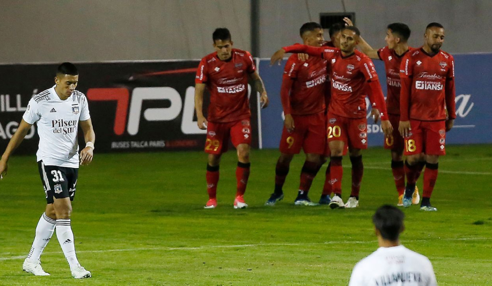
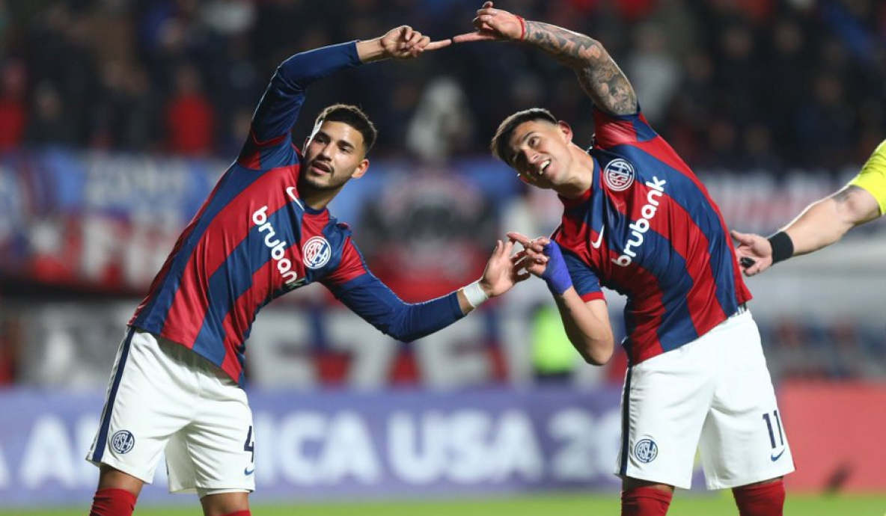

En este candente y brillante partido entre Nublense y Colo-Colo, el marcador quedó empatado 0:0.
Ambos clubes mostraron la máxima lucha y las ganas de marcar primero, pero las líneas defensivas de
los equipos eran impenetrables.
Los primeros minutos del partido estuvieron llenos de tensión y energía. Ambos equipos comenzaron de
manera muy agresiva y activa, tratando de obtener una ventaja y abrir una cuenta. Los porteros de
ambos equipos jugaron un papel importante, bloqueando todos los intentos de los contrarios.
Los equipos continuaron creando momentos peligrosos y atacando la portería del otro. El balón pasó
varias veces por encima de la portería, pero no llegó a la red. Parece que la suerte no estuvo del
lado de Nublense ni de Colo-Colo.
Este partido jugó un papel importante en la clasificación de ambos equipos. Nublense y Colo-Colo
demostraron su gran destreza y capacidad para desenvolverse en situaciones tensas. Los fanáticos, a
pesar de la falta de goles, quedaron impresionados por el juego de ambos equipos y apoyaron
activamente a sus favoritos.

Audax Italiano
Curicó Unido
3:0
25.07.2023
03:30
En el partido entre Audax Italiano y Curico United con marcador de 0:0, vimos un juego caliente e
intenso de ambos lados. Ambos equipos entraron al campo con muchas ganas de ganar y dejar su huella
en la clasificación.
Los primeros minutos del partido estuvieron llenos de ataques y saques de puerta. Los jugadores de
ambos equipos mostraron una excelente velocidad, precisión en los pases e ingenio en el ataque. Los
porteros, por su parte, demostraron un alto nivel de destreza, reflejando todos los golpes e
impidiendo que los contrarios marcaran gol.
En la segunda mitad del partido, ambos entrenadores hicieron cambios en los equipos, tratando de
encontrar la clave del éxito. El partido se puso aún más emocionante, pero ninguno de los equipos
pudo convertir sus ocasiones.
A lo largo del juego, ambos equipos demostraron un alto nivel de habilidad y experiencia. Los
jugadores repelieron con éxito los ataques del oponente, impidiendo que aparecieran oportunidades de
gol. Ambos equipos mostraron un excelente juego de equipo y disciplina.

Universidad Católica Santiago
Coquimbo Unido
2:1
24.07.2023
01:00
El partido entre Universidad Católica Unida y Santiago Coquimbo terminó en empate con marcador de
0:0. Este juego atrajo mucho la atención de los fanáticos, ya que ambos equipos estaban en su mejor
forma en los últimos partidos.
Durante todo el partido, hubo una sensación de tensión y nerviosismo en el campo, lo que hizo que
fuera una pelea muy caliente. Ambos equipos mostraron un juego duro y una ventaja física, lo que
provocó muchos contactos y lucha por cada balón.
El foco estuvo en los porteros de ambos equipos, quienes lograron repeler todos los ataques de sus
oponentes. Desempeñaron un papel crucial para mantener el marcador en cero y lograron atajadas
increíbles en su red.
Este partido tuvo un impacto significativo en las calificaciones de ambos equipos. Como resultado
del empate, la Universidad Católica Unida ha bajado ligeramente su posición en el ranking, pero
sigue siendo uno de los equipos más fuertes de la liga. Al mismo tiempo, Santiago Coquimbo ha
mejorado significativamente su posición en el ranking gracias a una sólida actuación ante un
oponente tan experimentado.